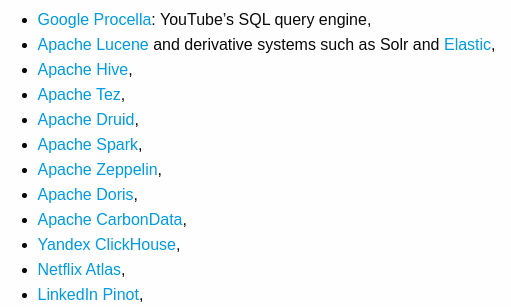
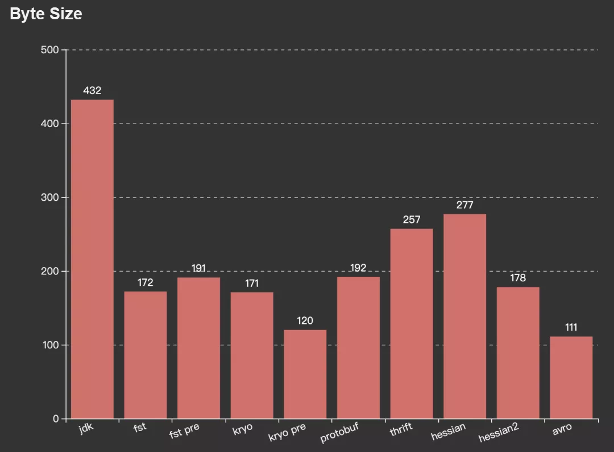
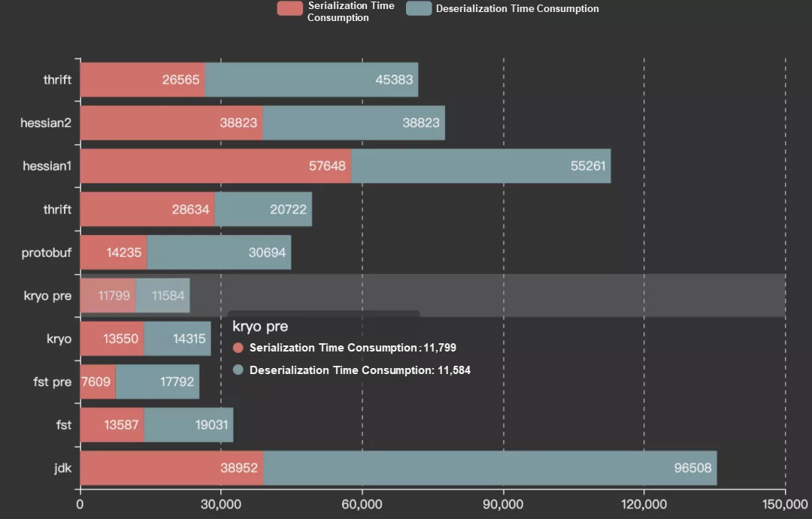
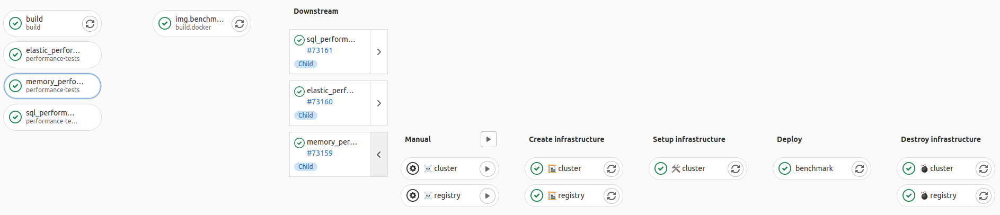

Evita DB

Evita Perón
Interpretation by Jan @Novoj Novotný
E-commerce API
- attribute filtering
- facets
- price handling (currencies, validity, VAT)
- range / overlap filtering
- localization
- fulltext search
|
|
- ultra-fast reads
- search index, not primary data store
- optimized for query batching - reuse intermediate results
- backed by schema, schema defined along the way
|
Research grant
- 3 competing teams
- same API, data, queries
- separate implementations:
- PostgreSQL (1st university team)
- Elasticsearch (2nd university team)
- Internal in-memory, noSQL (FG team)
- the most performant, the least demanding solution wins
|
|
- shared functional tests, performance tests
- artificial and multiple real life datasets
- replaying production traffic
|
Bitmaps
Set of integers between 70,000 and 130,000
- java.util.BitSet requires circa 16KB (130,000/8)
- int array requires circa 16KB (60,000*4 + small overhead)
- run length compression requires only few bytes
Roaring bitmaps
Allows to execute fast boolean operations (AND,OR,NOT) on large arrays of sorted integers.
- compressed - 4B int, 2B shared for block, 2B shorts encoded in 8KB container
- 3 types of containers:
- sparse: array of shorts (chars), 2B per value
- dense: bitmap (like BitSet), 1bit per value
- ultra dense: uses run-length encoding
- good for integers that are based on sequences, bad for random numbers
- types of containers are automatically converted
References
Who uses RoaringBitmap

Kryo
Ultra-fast (de)serialization library. GB/s


References
|
|
Tight corners:
- class registration if you don't know them up-front
- tricky to extend stream processing (adding own CRC, length observing, chunking mechanics)
|
Random testing
Wiki
Uses randomized operations on the dataset and verifies results against formal specification.
- very handy for testing data structures
- used for testing transactional memory
- very quickly discovers real bugs, it has no bias
TransactionalUnorderedIntArrayTest,
HistogramIndexTest
Performance tests

- compiles Java sources
- builds Docker image with data and shell script
- provisions infrastructure in Digital Ocean
- deploys Docker in Kubernetes
- executes performance tests and exports JSON file
- during tests exports telemetry to Prometheus/Grafana
- exports JSON as Gist
- destroys and releases infrastructure
Results are available online via JMH Visualizer as nice graphs.